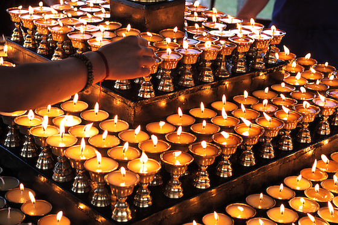
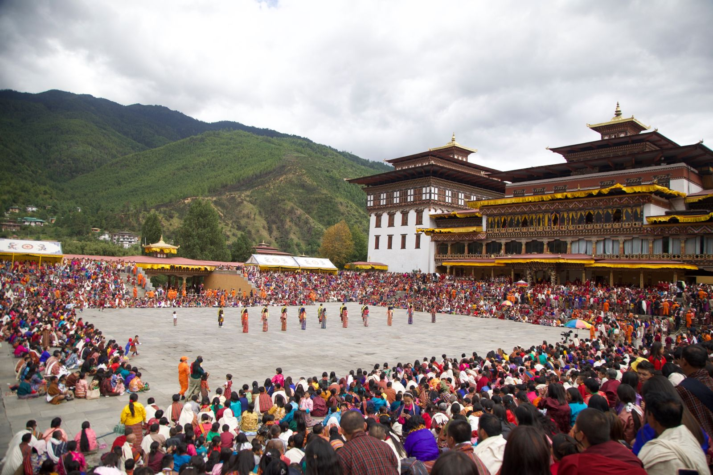
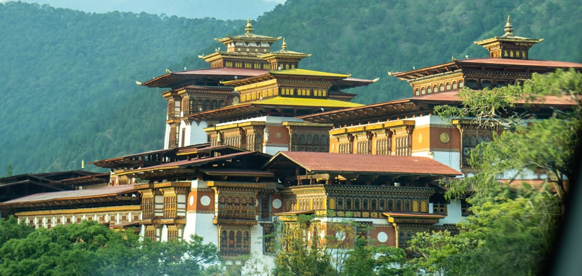
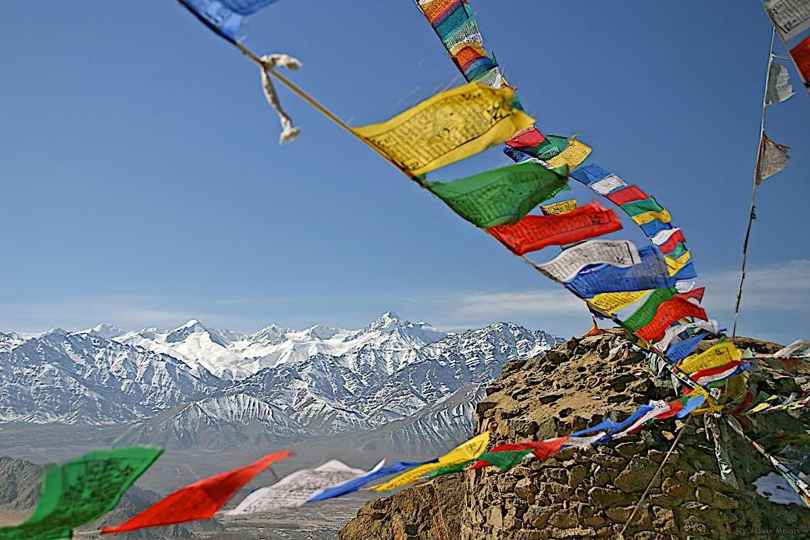
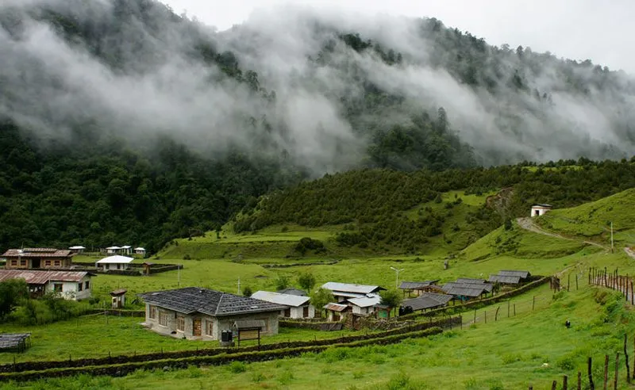
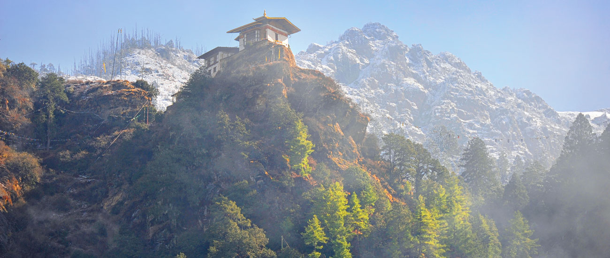
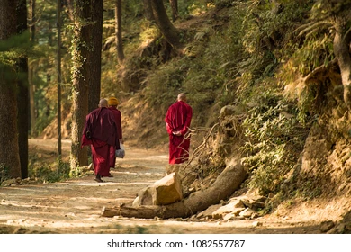
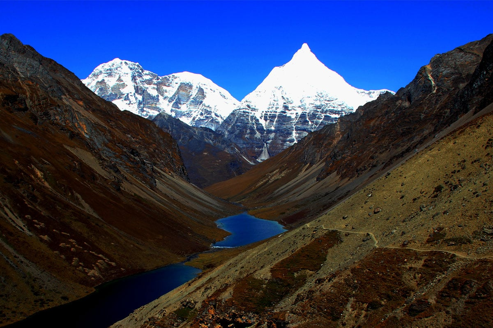

✦ Photo Essay
Serves as a visual gateway into the soul of the Bhutanese highlands, moving beyond simple tourism to capture the profound connection between faith, land, and community.

Dawn Ceremony
Morning Offerings
The first light of day in Thimphu sees families lay out butter lamps and incense offerings.

Festival & Mask Dance
Tsechu Celebrations
Vibrant mask dances performed during the annual Tsechu festival — elaborate costumes.

Temple & Monastery
Spaces of Prayer
Prayer wheels, monks in meditation, and sacred interiors captured in quiet devotion.

Everyday Cosmology
Sacred in the Ordinary
Prayer flags across mountains and mani stones along paths — sacred beliefs woven into life.

Highland Livelihood
Yak Herding Life
Nomadic herders guiding yaks across alpine pastures — a tradition passed through generations.

Settlements
Mountain Villages
Scattered homes nestled in the mountains — where communities live closely with nature.

Spiritual Landscape
Prayer Flags in Wind
Colorful prayer flags flutter across ridges, carrying blessings through the winds.

Culture & Identity
Traditional Dress
The elegance of Gho and Kira — Bhutanese attire reflecting identity and cultural pride.

Landscape
Highland Horizons
Endless mountain ranges and open skies — the natural beauty of the highlands.

Monastic Life
Paths of Monks
Monks walking along mountain paths — embodying discipline and peace.

Seasonal Change
Winter Highlands
Snow-covered landscapes transforming the highlands into serene worlds.